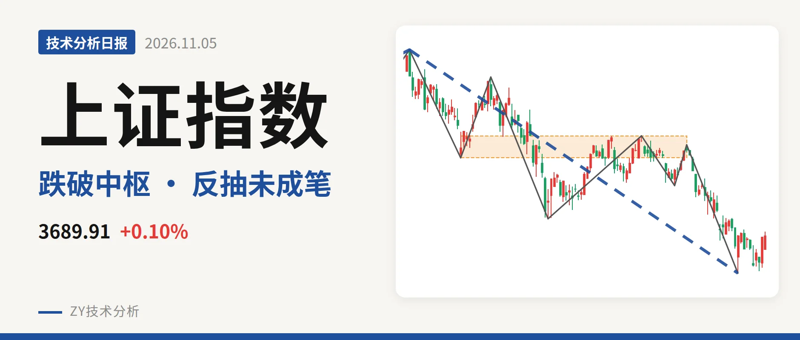
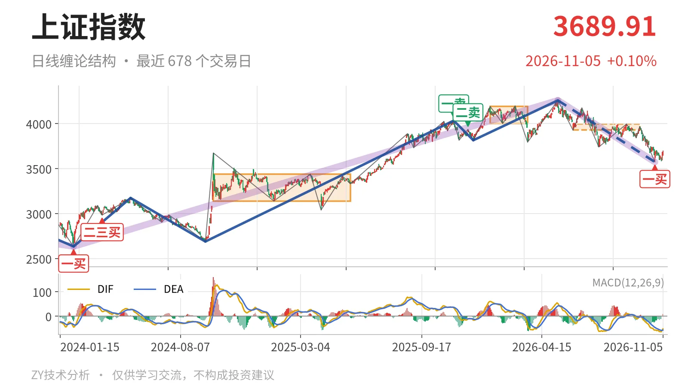
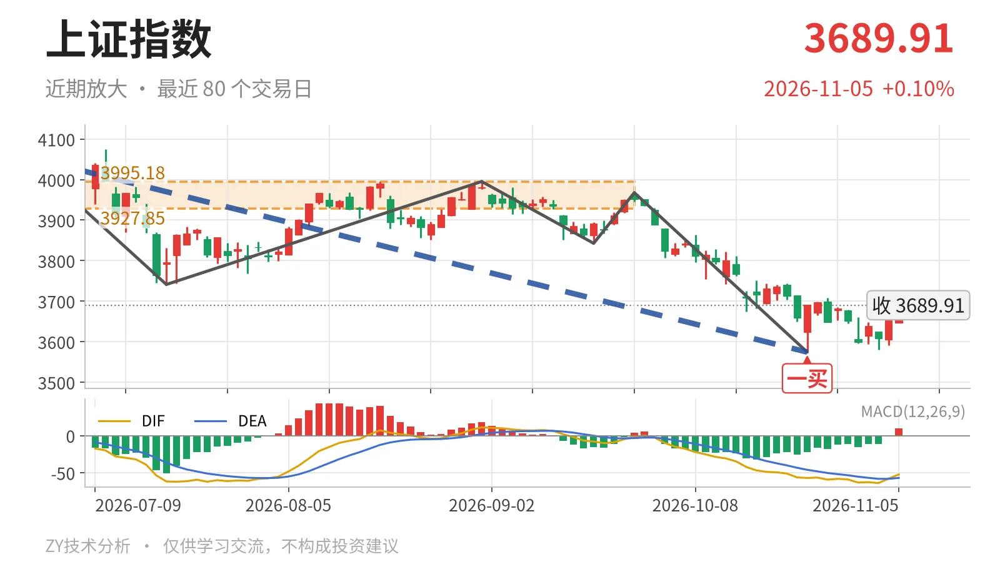

上证指数｜跌破日线中枢 反抽看3928点

最近日线中枢 3927.85—3995.18点，收盘位于中枢之下
一句话：反抽不回3928点上方，日线只能按中枢下方弱反弹处理。
🧭 走势结构：反弹不改日线下跌段
当前位置仍处在日线下跌结构里，还没有出现反向线段。更大级别上，2024年2月5日至2026年5月14日的上涨段由2635.09点走到4258.86点，上涨61.6%，这一段尚不能判定结束；5月14日以来的下跌段则仍在延续。日线线段上，5月14日至10月23日的下跌线段由4258.86点跌至3574.27点，跌16.1%，内部含7笔，仍处在未结束状态。10月26日以来的回升最高只有3708.20点，连9月22日下跌笔起点3967.68点都未触及，仍是线段内部的弱反抽。因此当前不是新一轮上涨，而是下跌段内部反抽。

📍 中枢与位置：最新价低于下沿约6.1%
最新收盘3689.91点已经跌破最近日线笔中枢。该中枢由6月8日至9月22日构成，区间3927.85—3995.18点；收盘低于下沿约6.1%。上一日线笔中枢是1月14日至3月23日的4002.78—4190.87点，两中枢比较，中枢从4097点一线下移到3962点一线，属于中枢下移。价格离开最近中枢后没有回补，这是向下离开，不是中枢内震荡。当前位置离中枢下沿尚有约220点距离。
🎯 买卖点：10月23日一买只属笔级
10月23日3574.27点的一买，是最近一个日线笔级别买点。它所在的9月22日至10月23日下跌笔已经结束；其后10月26日至11月5日最低3580.38点，未破3574点，所以这个一买暂未被破坏。但5月14日以来的日线下跌线段还在延续，更大级别并不配合，因此它只能解释成日线笔级低点，不能当作日线线段一买。上方2025年11月14日一卖4034.08点与2025年12月8日二卖3936.31点一个比一个低，也说明本轮下跌的高点结构没有改变。

⚡ 背驰：DIF低点新低，标准衰减未现
最需要比较的是进入中枢与离开中枢的两段同向下跌笔。5月14日至6月8日下跌笔绿柱面积360，DIF低点-21.1；9月22日至10月23日下跌笔从3967.68点跌至3574.27点，绿柱面积347，DIF低点-57.1。价格创了新低，DIF低点也大幅新低，绿柱面积只是从360缩到347，这种组合不构成“新低不新弱”，说明下跌动能没有出现标准衰减。最新日线MACD的DIF为-52.3，仍在零轴下方，红柱9.4只是零轴下反抽。10月23日的一买只能定位为较小级别的一买。
🔍 关键位置观察：反抽3928点定强弱
当前反弹最高3708.20点，距最近中枢下沿3927.85点还有约220点。反抽若走成笔后仍回不到3928点上方，结构上构成日线三卖；重新站上3928点，下跌更可能转为中枢扩展而非继续深跌。下方3574点若再被跌破，10月23日一买被破坏，日线下跌段继续延伸。综合看，短期定性为偏弱：价格位于中枢下方，反抽尚未回补中枢。
⚠️ 本文为基于公开行情数据的缠论技术结构记录，由程序自动计算并生成，仅供学习交流，不构成任何投资建议。市场有风险，投资需谨慎。